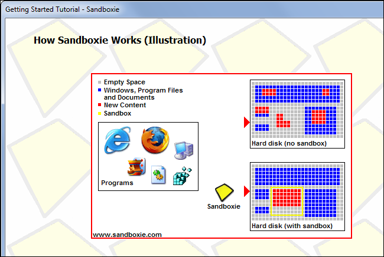

Sandboxing is an important security technique that isolates programs, preventing malicious or malfunctioning programs from damaging or snooping on the rest of your computer. The software you use is already sandboxing much of the code you run every day.
You can also create sandboxes of your own to test or analyze software in a protected environment where it won’t be able to do any damage to the rest of your system.
How Sandboxes Are Essential For Security
A sandbox is a tightly controlled environment where programs can be run. Sandboxes restrict what a piece of code can do, giving it just as many permissions as it needs without adding additional permissions that could be abused.
For example, your web browser essentially runs web pages you visit in a sandbox. They’re restricted to running in your browser and accessing a limited set of resources — they can’t view your webcam without permission or read your computer’s local files. If websites you visit weren’t sandboxed and isolated from the rest of your system, visiting a malicious website would be as bad as installing a virus.
Google Chrome and Internet Explorer both run in a sandbox themselves. These browsers are programs running on your computer, but they don’t have access to your entire computer. They run in a low-permission mode. Even if the web page found a security vulnerability and managed to take control of the browser, it would then have to escape the browser’s sandbox to do real damage. By running the web browser with fewer permissions, we gain security.
What’s Already Being Sandboxed
Much of the code your devices run every day is already sandboxed for your protection:
- Web Pages
- Browser Plug-in Content
- PDFs and Other Documents
- Browsers and Other Potentially Vulnerable Applications
- Mobile Apps
- Windows Programs
Your browser essentially sandboxes the web pages it loads. Web pages can run JavaScript code, but this code can’t do anything it wants — if JavaScript code tries to access a local file on your computer, the request will fail.
Content loaded by browser plug-ins — such as Adobe Flash or Microsoft Silverlight — is run in a sandbox, too. Playing a flash game on a web page is safer than downloading a game and running it as a standard program because Flash isolates the game from the rest of your system and restricts what it can do. Browser plug-ins, particularly Java, are a frequent target of attacks that use security vulnerabilities to escape this sandbox and do damage.
Adobe Reader now runs PDF files in a sandbox, preventing them from escaping the PDF viewer and tampering with the rest of your computer. Microsoft Office also has a sandbox mode to prevent unsafe macros from harming your system.
Web browsers run in low-permission, sandboxed mode to ensure that they can’t do much damage if they’re compromised
Mobile platforms run their apps in a sandbox. Apps for iOS, Android, and Windows 8 are restricted from doing many of the things standard desktop applications can do. They have to declare permissions if they want to do something like access your location. In return, we gain some security.
User Account Control functions as a bit of a sandbox, essentially restricting Windows desktop applications from modifying system files without first asking you permission. Note that this is very minimal protection — any Windows desktop program could choose to sit in the background and log all your keystrokes, for example. User Account Control just restricts access to system files and system-wide settings.
How to Sandbox Any Program
- Virtual Machines
- Sandboxie
A virtual machine program like VirtualBox or VMware creates virtual hardware devices that it uses to run an operating system. The other operating system runs in a window on your desktop. This entire operating system is essentially sandboxed, as it doesn’t have access to anything outside of the virtual machine. You could install software on the virtualized operating system and run that software as if it were running on a standard computer.
Sandboxie is a Windows program that creates sandboxes for Windows applications. It creates isolated virtual environments for programs, preventing them from making permanent changes to your computer.
